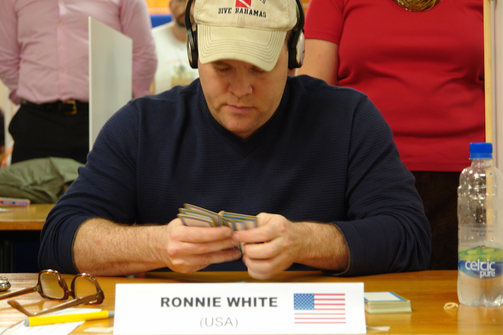
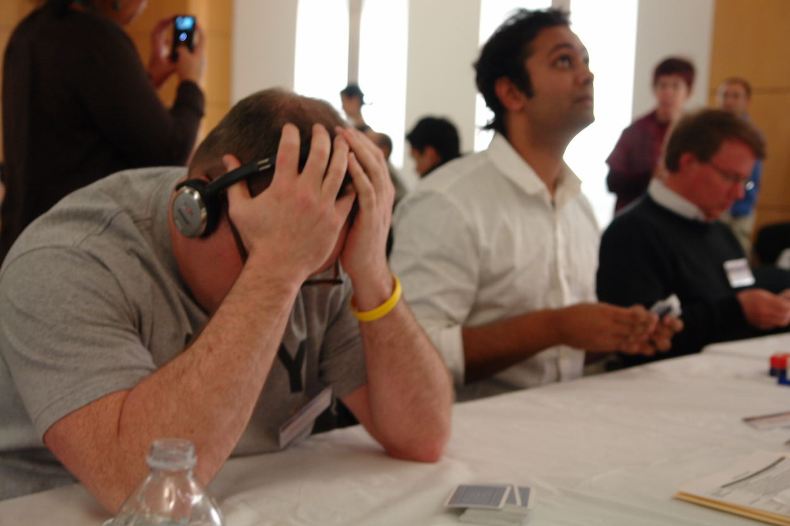
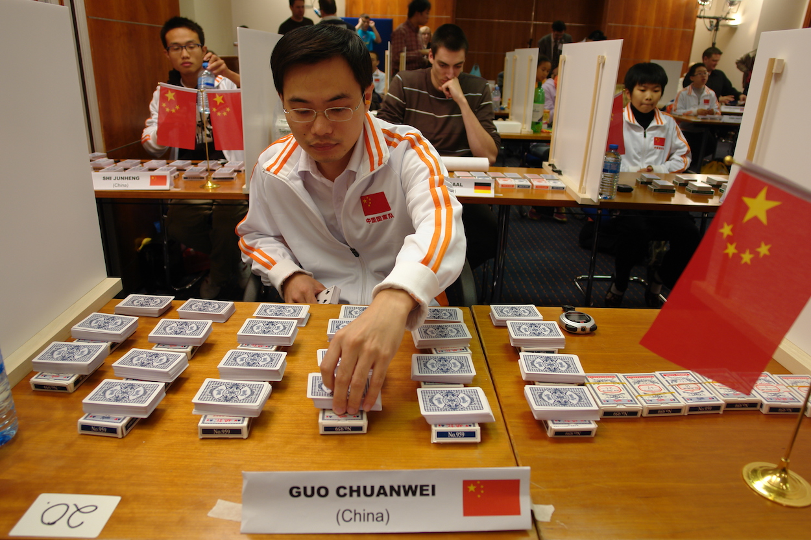

記憶力世界選手権
PHOTO: COURTESY OF MEMORY-SPORTS.COM
ランダムに並んだ52枚のトランプの絵柄を、わずか17秒で暗記することができる。ごくふつうの男が、訓練と努力によってそんな超人的な能力を身につけた。いったいどのようなトレーニングを積んできたのか。「記憶力世界選手権」に挑戦する全米チャンピオンに密着した。「クーリエ・ジャポン」2010年8月号に掲載された人気記事。
2009年11月の雨模様の朝。第18回記憶力世界選手権の会場であるロンドンのストランド・パレスホテルの地階に、15ヵ国から64人の出場者が集結した。出場者を見渡すと、まるで映画『ナーズの復讐』に出てくるオタクたちのようだ。
本命は英国人のベン・プリッドモアで、ランダムに並べられた1組52枚のトランプの並び順を30秒以内で暗記することができる。大会ウェブサイトの写真では、映画『ロード・オブ・ザ・リング』に出てきそうなマントの奥から顔をのぞかせている。
そのなかでただ1人、例外的に洒落た男がいた。全米記憶力選手権の現チャンピオン、ロニー・ホワイトだ。
がっちりした体格にブロンドの髪。角張った顎をしていて、えくぼが見える。ラングラーのジーンズとカウボーイブーツを好み、フーターズ（レストランチェーン）で食事をし、鼻にかかった声で話す、テキサス在住の36歳だ。
「ロニー・ホワイトだな。米国が世界レベルでどのあたりかを確かめに来たんだろう？」
そして彼は06年の全米チャンピオン、ジョシュア・フォアの名を口にした。
「あいつは自分がすごいと思っていたようだが、それほどでもなかったぞ」
ホワイトは時差ぼけで苛立っていた。
「おい、お前らがいまドイツ語じゃなくて英語を話していられるのは、俺たちのおかげだ」と口にしかけたがやめた。
この手の連中とホワイトが違うのは、ラングラーのジーンズと強い愛国心のせいだけではない。フォアはイェール大の家系だが、ホワイトは学歴があるわけではない。プリッドモアや、自閉症にもかかわらず非凡な才能をもつステファン・ウィルトシャー（ローマに30分滞在しただけで、記憶を頼りにローマの絵を描いた画家）のような天才でもない。
ホワイトは、両親が警察官と地元フォートワース市自動車局の免許証用写真係をしている家庭に生まれた。大学を中退してからは営業の仕事につき、海軍の予備兵となった。そしていささか古めかしい考えだが、固い決意と厳しい修練によって、ヨーロッパの頭脳派エリートに米国の力を見せつけられるという自信をもっている。
彼は07年に全米記憶力選手権に狙いを定め、翌年に4位入賞した。その後、斬新で厳しい訓練方法を編み出し、09年3月の全米大会で見事チャンピオンに輝いた。賞金こそ出なかったが、ロンドンの世界大会への切符という褒美を手にした。
そしていま、彼はここにいる。
11月12日の午前9時半、出場者が会議場に並べられたテーブルについた。目の前には裏返した紙が置いてある。英国人司会者がマイクを取った。軍支給の分厚いサングラスをかけ、ノイズキャンセルのヘッドホンをつけたホワイトは、体を前にかがめて深呼吸し、心を静めた。司会者が叫んだ。
「用意、始め！」

PHOTO: COURTESY OF MEMORY-SPORTS.COM
脳に違いはあるのか
子供のとき、ロニー・ホワイトは何かに関心を抱いていたかもしれないが、それは在学中に薄れていった。ノース・テキサス大学で2年生のときの成績があまりに悪く、停学処分を受けた。結局、卒業はできず、営業の仕事についた。
煙突清掃サービスの電話営業をしていたある日、1人の顧客に気に入られ、すぐにその顧客の会社で記憶力セミナーに関する営業をするようになった。
やがてホワイトは、記憶力をアップさせることはそれほど難しくないと考えるようになった。実際、彼は記憶術をマスターしはじめていた。
ホワイトは自分の会社を立ち上げた。そしてビジネス交流会などで参加者に人の名前を記憶する方法を教え、優れた記憶力を披露しては喜ばれた。会議の場では200人もの出席者に名札を隠してもらい、全員の名前をすらすらと言い当てた。
同時多発テロの後、ホワイトは海軍予備役に志願し、07年にアフガニスタンに派遣された。カブール駐留中、米国に戻ったら全米記憶力選手権に挑戦しようと考えるようになる。
12時間のシフトを終えて兵舎に戻ったあと、イメージや数字を記憶した。彼は安全情報に関するブリーフィングをメモなしでこなし、その才能に感心した上官らの指示で、他の隊員にカブールの地形や部族のことを覚えるコツを指導した。
08年に全米選手権で4位になった後、テキサスの家に戻ってから勝利への道のりを画策した。彼はノートに自分が歩んできた道程を記録した。黒革の装丁で「ジム・ローンのリーダーシップ日誌」という金文字が入ったノートだ。
ホワイトは長いあいだ自己啓発分野の億万長者ジム・ローンのファンだった。彼はノートを開き、成功者になるためのヒントが書かれたページを開いた。そこには「成功とは魔法でも神秘でもなく、基本原則を徹底することで得られる自然の結果だ」と書かれてあった。
空白のページに彼は記した。
「09年3月7日のニューヨークでの全米選手権まで約90日。それまでに、1組のトランプの並び順を1分30秒で暗記し、167桁の数字を5分で暗記する。そして記憶力選手権の全米王者になる」

PHOTO: COURTESY OF MEMORY-SPORTS.COM
30分の有酸素運動を週5日（脳機能を高めて、自信を得るため）、ウェイトトレーニングを週3日、そして6時間の記憶訓練を週5日。これはいずれもホワイトの課題リストにある訓練方法だ。
彼はその結果についても多くのメモを残している。12月1日には「トランプのカードを記憶する新しい訓練法を試している」と書いた。「カード3枚で4.5秒は遅すぎる！」。その後にはタイムの記録が続き、「ノーミス！ 完璧！」、「トランプ1組、2分21秒6」と記した。
脳は抽象的な概念よりも視覚イメージのほうが記憶しやすい。
ホワイトの場合、0から99までの数字ひとつひとつに対するイメージが決まっている。14はドリュー・キャリー（米国のコメディアン）で、62はシャナイア・トゥエイン（カナダのカントリー歌手）といった具合だ。
そしてトランプの暗記には、「キャラクター=アクション=オブジェクト」と呼ばれる方法を用いる。たとえば、スペードのキングなら、ティム・マッグロウ（米国のカントリー歌手）がファンの1人をステージ上に引っ張っているというイメージだ。
また物事の順序を記憶するために、個々の情報をイメージに結びつけて1つの経路上に置いていく、「ジャーニー」という方法も考案した。
ホワイトがよくいる場所は、ダラスのアパート、近所のフーターズ、地元で有名な安酒場のビリー・ボブズ・テキサスだ。彼は記憶するときに、このなかのどこかにいる自分を想像して、物事の一つ一つを椅子やテーブルに「綴じ込んで」いく。
ホワイトは自分が決してアインシュタインではないと強調する。
「僕と同じだけ時間をかければ、同じくらいの記憶力がつく。保証するよ」
ホワイトの言うことには科学的な裏づけがある。フロリダ州立大学のK・アンダース・エリクソン教授によると、03年の研究で、トップレベルの記憶力をもつ人たちの脳はふつうの人と比べてわずかな違いしかないことがわかった。空間認識や経路認識、連想をつかさどる部分の働きが活発だったが、これらはすべて訓練で鍛えられるものだ。
「ほとんどの人が才能は生まれつきのものと考えていますが、意図的な訓練の結果として説明できることがわかってきています」とエリクソン教授は言う。
寒中水泳で弱点を克服
ホワイトは頭脳で足りない部分を、古き良き米国人的な根性で埋め合わせている。すなわち、人の助けを借りるということだ。
ホワイトは、海軍を退役し、軍隊経験を生かしてサンディエゴでコンサルティング会社を経営していたT・C・カミングスのところへ向かった。そして彼の助言のもと、ホワイトは精神力の強化に乗り出した。カミングスは言う。
「もし彼が失敗するとしたら何が原因かを考えた。ホワイトの場合は、本番のプレッシャーだった。これは戦場でも同じだ。平時に苦しい思いをすれば、その分だけ戦闘時に流す血の量が減る。だから、彼には過酷な訓練を課した」
ホワイトは気晴らしに、公共の場や、友人の子供が彼の体によじ登るなかで、「ジャーニー」を見直した。アパートのプールに潜って、特注のプラスチック製トランプを使って水中でカードを暗記した。カミングスの厳しい指導にもかかわらず、目標に向かってうまく進まないこともあった。
まず、ホワイトにはよく寝坊する癖があった。しかも「早起きすらできないのに、どうして全米大会で優勝できるのか」と、くよくよと悩んでいた。カミングスは、ホワイトがいつまでも自責の念にかられないように、朝寝坊を帳消しにする行動を取るようアドバイスした。ホワイトが次にベッドでぐずぐずしていたとき、気温は0度近い1月のことだったが、罰として屋外プールでひと泳ぎさせた。それで問題は解決した。
彼には他にも弱点があった。物事を後回しにする癖、ビール、脂っこい食べ物、野球、そして女性。それらの誘惑をはねのけ、彼は自己管理をさらに強化した。
だが訓練が進むにつれて、自信を失っていった。休暇の後では、「1週間のオフでかなりスピードが落ちた！」と記している。「体重に充分気をつけなくてはならない。今日は紅茶に人工甘味料を入れた。頭が爆発しそうだ」
数週間後、ストレスはさらに高まった。「精神的スランプだ。集中できない。覚えられない。気持ちが萎えている」
カミングスはホワイトの自信を取り戻すために、これまでの人生を振り返って、達成したことのリストを作らせた。
ホワイトは軍隊に志願し、数千人の前で講演し、4分間で171桁の数字を暗記したことなどをリストに挙げた。また、水中でトランプ1組の並び順を2分で暗記したことなども書き出した。そして「私は記憶力のノーラン・ライアン（大リーグの名投手）だ」と記した。

PHOTO: COURTESY OF MEMORY-SPORTS.COM
モチベーションの維持
09年の全米記憶力選手権は、3月7日にニューヨーク市のコン・エジソン社ビルで開催された。そのとき、前年のチャンピオンで33歳のチェスター・サントスはホワイトを脅威だと思っていなかった。
だが彼は、すぐに自分が間違っていると悟った。前の年、ホワイトは20枚のトランプの並び順を覚えるのに5分かかったが、今回は52枚を1分27秒で暗記したのだ。「彼が1年で大幅にスピードを上げるとは予想していなかった」とサントスは語る。
午後の「お茶会」と呼ばれる種目まで残った出場者は、わずか5人だった。
この種目では、何人かの出題者が住所や誕生日、電話番号、好きな食べ物など、24種類の情報を次々に述べる。出場者はその場で情報を暗記し、質問に答える。
この日、何人かがステージに上がり、自分に関する情報を述べた後、サントスは1人の出身地を間違え、すぐにポイントを取られた。あとポイント2つで失格だ。
米海軍のTシャツを着たホワイトは落ち着いていて、顔色ひとつ変えずに正解を出した。
サントスは好きな食べ物を答えるときに、3つ目のポイントを取られた。正解はパエリアとラビオリとピザだったが、頭のなかでパエリアのイメージを目にした後に、浮かんできたのはぼやけた円のイメージだった。サントスは「スシ」と答えた。
「もう少し時間をかければ、ラビオリだと思い出せた。しかし時間がなく、答えを急いでしまったんです」とサントスは振り返る。
ホワイトは自分が新チャンピオンになったことを喜んだが、冷静だった。結局のところ、彼はやるべきことをやったし、チャンピオンにふさわしい人間だった。
だが8ヵ月後のロンドンで、ホワイトは明らかに自信を失っていた。残念なことだが、全米王者となったホワイトは訓練を怠けるようになった。
優勝した人間によく見られる現象だが、モチベーションを維持するのは難しかった。食事に気を配るのをやめ、バッファロー・チキンのサンドイッチやフライドポテトをむさぼった。何時間も野球を見て過ごし、数週間のあいだカミングスからの電話を無視し続けた。世界選手権のことなど聞きたくないと思うこともあった。
大会を控えた不安な時期に、ジム・ローンのある言葉が何度も頭に浮かんだ。
「成功に必要なのは、簡単な行動ばかりだ。だが行動しないでいるのも簡単だ」
世界選手権まであと1ヵ月になって、ようやく彼は訓練を再開した。自分が達成したことのリストを作り、自分の悪い行いに対して新たな罰を定めた。
墓地でイメージを作り直すこともした。「墓場でやったのは、『おい、いつかチャンスがなくなる日が来るから、いまやっておいたほうがいい』と自分に言い聞かせるためだ」とホワイトは説明する。
しかしロンドンの大会では集中力を欠いて、ケアレスミスを連発した。
1時間で記憶できる数字の桁数を競う種目では、390桁目で混乱し、止まってしまった。
次の日、彼は12組のトランプの並び順を1時間で暗記する。しかし解答するときになって、トランプではなく1枚の紙を渡されて動揺する。並び順を用紙に書くというやりかたに戸惑い、最下位に近い順位となった。
最終日、彼が最も得意とする種目が行われ、52枚のトランプを自己ベストの17秒で暗記した。ところが審判が結果を確認しているときに、致命的な間違いが見つかった。22番目のカードでミスしてしまったのだ。ホワイトは腹にパンチを食らった気がした。
結局、世界チャンピオンには、2年連続でプリッドモアが輝いた。ホワイトは30位に終わった。表彰式の準備が進められるなか、落胆したホワイトは革張りの椅子にどっかりと腰を下ろした。
「すべては訓練次第だ。全米大会のときには、死に物狂いで訓練した」とホワイトは話す。
「ただロンドンに来て、新しい作戦のアイディアを得ることができたんだ」
ホワイトの目には輝きが見えた。
「わかるかい？ 3月以来、いまがいちばんやる気になっているんだ。酒をやめて、体重を落とす。全米王者のタイトルを守り、今後5年間の出場権を手にする」と語った。
「映画『ロッキー』でどれに当たるかと言えば──ロッキーは負けてからカムバックし、共産主義者たちをやっつけた。あの『ロッキー4』みたいになるだろうね！」
Copyright (c) 2010 Condè Nast. All rights reserved. Originally published in Details. Reprinted by permission.
※コメントにはユーザーネームとアイコンの設定が必要です。